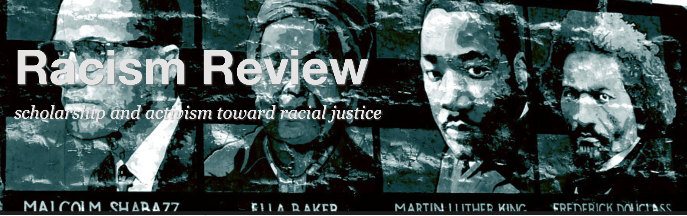
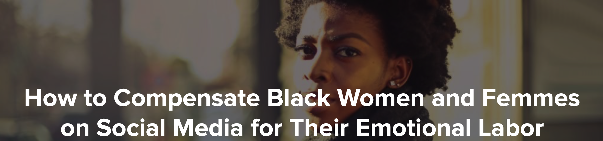
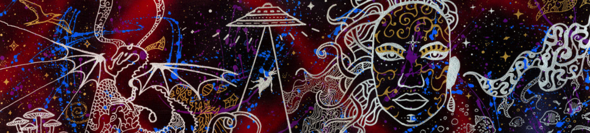
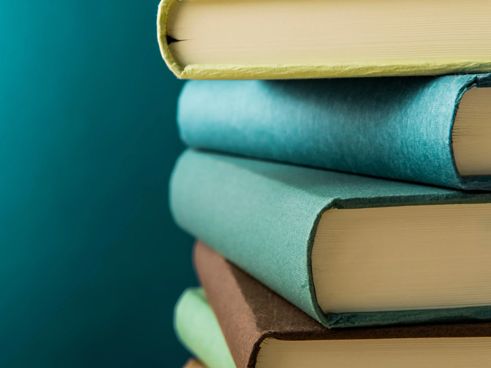
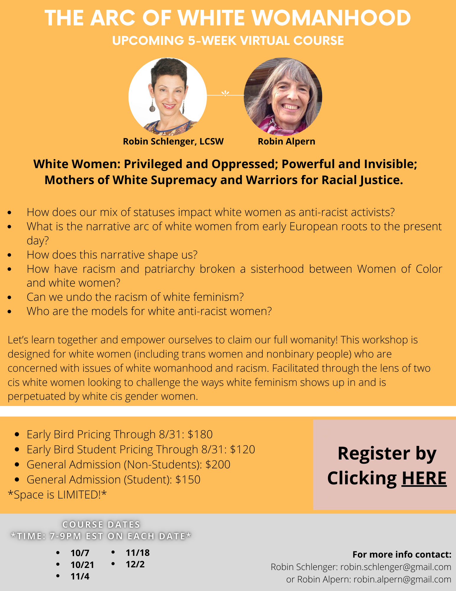
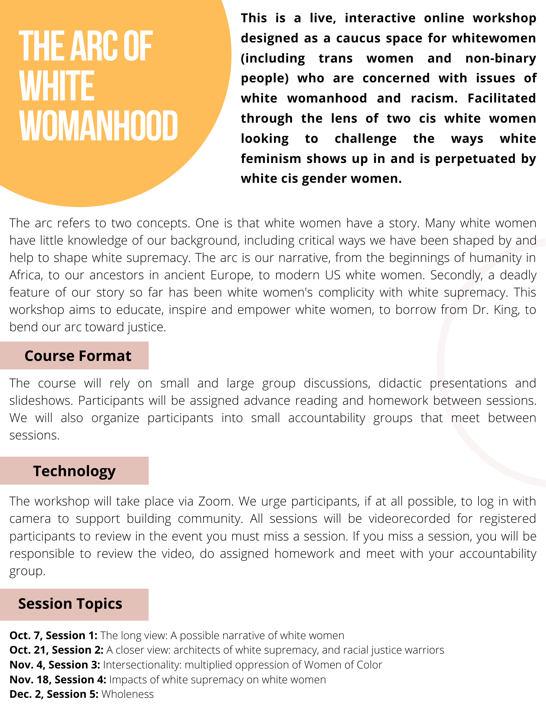
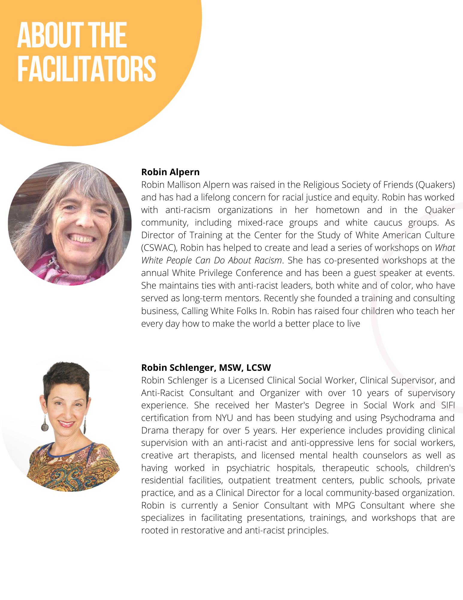
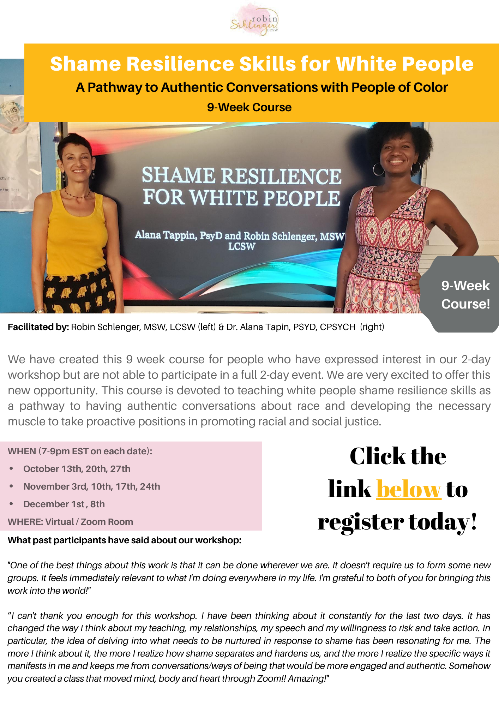
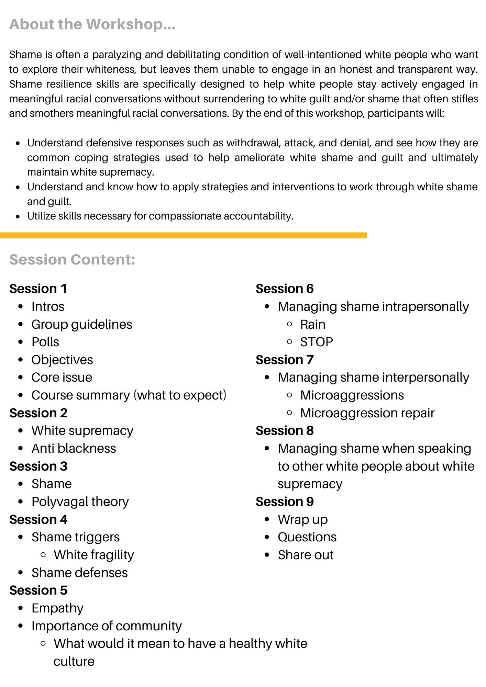
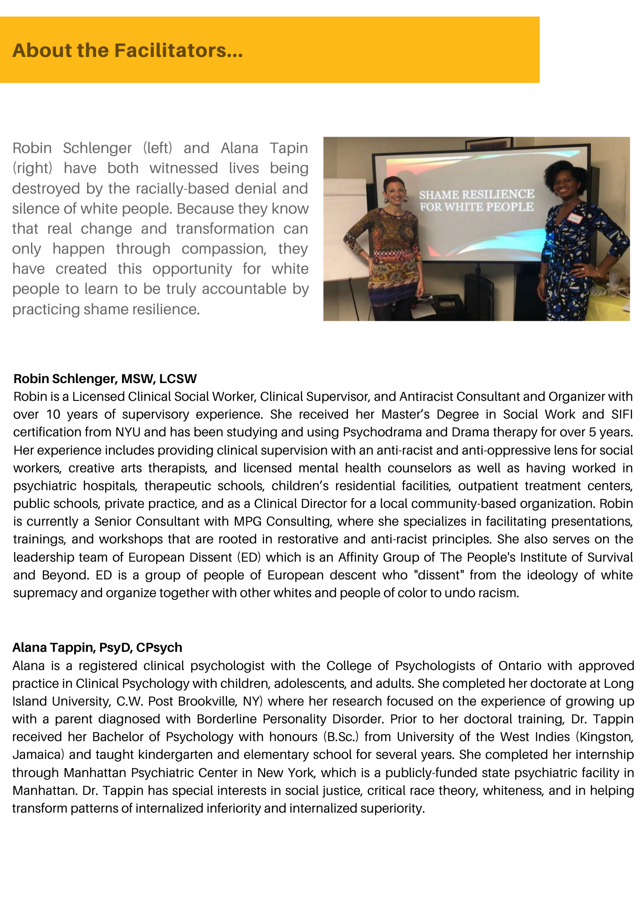

2020-08-30
The Power Of Dissociation In Upholding White Supremacy
In my work as a consultant and trainer, I have the honor and privilege of collaborating with some very wise and talented Women of Color, some of whom have become friends. I try to be aware of how I show up in these relationships and where I am acting out my internalized racial superiority. However, I also know that I often don’t even see it happening, and with all “good intention”, I often still perpetuate racism in these relationships. Since I began working on a new project about white feminism, I have become even more aware of the legacy of harm that white women continue to act out and onto WOC. Personally, it is extremely painful, uncomfortable, and outright sickening to look at our history as white women and see the multitude of ways we have intentionally and unintentionally caused (and continue to cause) harm to WOC, especially Black women. In this process of studying and learning more about the history of white feminism, I often feel disgusted, and yet it's quite another thing to see how it causes harm upfront and personally to the WOC that I am in relationships with. That really hits home like a punch in the gut. However, it has helped me to understand how powerful distancing is in maintaining white supremacy culture. Feeling and seeing the impact of my racism in the relationships I have with WOC that I love and care for is gut-wrenching and heartbreaking. I choose to use this pain as a way to learn and grow, rather than wallow in it or dissociate. I notice it and refocus on the harm done to WOC. I can understand why so many of us white women shut down and run from the pain, but when I feel myself start to falter or look away, I remind myself what is at stake; my humanity and our collective humanity. When I remember that, there is no question that it's worth every second of self-doubt, discomfort, and heartbreak. There is no other option!
See you on the journey,
Robin

This first resource is a blog. I had the pleasure of meeting the author, Jessie Daniels, when she registered and participated in one of the ”Shame Resilience and Transformation Skills for White People” workshops that I facilitate with Dr. Alana Tappin. She is currently finishing up a book called “Undoing White Womanhood.” I had a chance to talk with her about her work and research in preparing for “The Arc of white Womanhood '' workshop series I’m co-facilitating with Robin Alpern in the fall. This blog has so many amazing resources. I am still going through them. Thank you, Jessie!!!
Link to blog: http://www.racismreview.com/blog/2015/12/30/review-trouble-with-white-feminism/

I found this article on everyday feminism. It speaks to the massive historical and present-day inequities that exist for Black women "and femmes''. Even using the word inequity feels like whitewashing. To quote the author, “ … The US owes its very existence to the Black women whose unpaid labor built this nation.” This piece was written in 2018 and it feels even more relevant now with the enormous toll that racial inequity is continuing to take on the mental, physical and spiritual health of Black women. As a white woman, I can’t read this and not own my part in perpetuating these inequities. Let me be more clear. I have been a foot of oppression on the necks of Black women and other Women of Color. Now that I can feel it in my body, I can metabolize it and do something different. It's a hell of a lot harder to do nothing when you can feel it in your bones.
Link to article: https://everydayfeminism.com/2018/12/how-to-compensate-black-women-and-femmes-on-social-media-for-their-emotional-labor/

This is a recent piece by Adrienne Maree Brown that went through me like a tuning fork. Only a few paragraphs in, she says,“The time for denial is over. You were not raised in a secret mountaintop retreat disconnected from the world, you haven’t existed with no contact for over 400 years… so we know you see and know what is going on. And you’re scared, saddened, defensive, guilty, and unsure of who to be if you aren’t the default superior. So you make choices towards or away from or against your own highest self.” The only other thing I can say is to read it, feel it, do something about it, and thank her for her labor.
Link to article: http://adriennemareebrown.net/2020/06/28/a-word-for-white-people-in-two-parts/

This last article was written by a fellow member of European Dissent NYC and so very worth the read. Thank you so much Abbi for your vulnerability, wisdom, and willingness to share. If you aren’t familiar with European Dissent, we are a collective of white antiracist organizers, who come together to explore ways in which to practice The People’s Institute principles in our personal, social, work and family lives. Members of European Dissent (ED) are persons of European Descent who dissent from the racist institutions and values designed to benefit them.
Link to Article: https://www.self.com/story/journey-to-anti-racism?fbclid=IwAR027RV29s-RaRfH-VQQnugX1zq0VwwvdSHinjLTnOkPTxglQzx5od9WjCU





